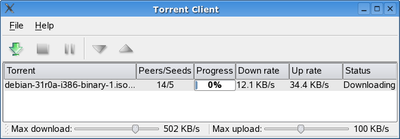

| Home · All Classes · Main Classes · Grouped Classes · Modules · Functions |
Files:
The Torrent example is a functional BitTorrent client that illustrates how to write a complex TCP/IP application using Qt.

| Copyright © 2006 Trolltech | Trademarks | Qt 4.1.2 |